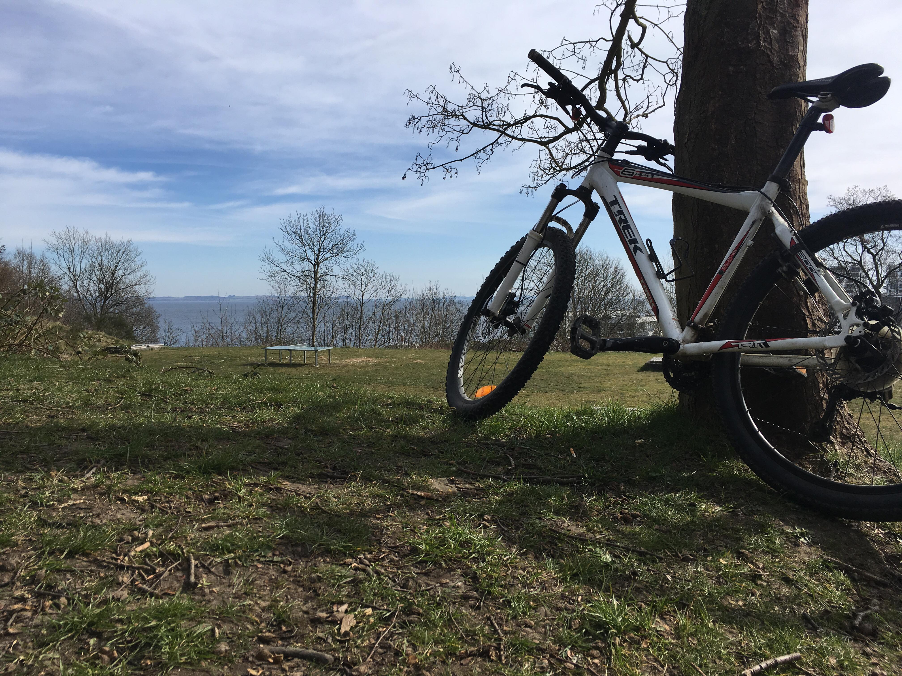
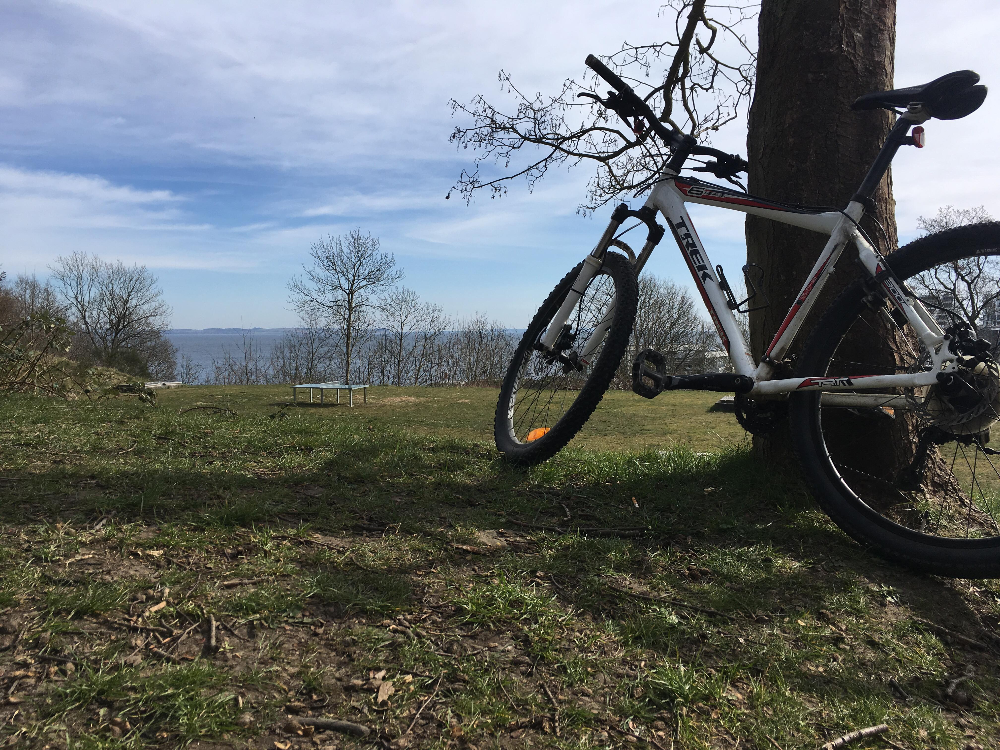

Lokation Aarhus
Gode spots
I en by som Aarhus er der næsten ikke grænser for hvad en udendørs
træning kan byde på. Gaden kan blive til en Marathon rute og bakken
i skoven kan blive som bjergetapen i Tour De France. Byen ligger tæt på
strand og vand som også byder op til aktivitet. Man kunne selvfølgelig
være tilbøjelig til at lade vind og vejr påvirke, men vil man i form skal
det ikke holde en atlet tilbage.
De mange cykelstier kan lede dig direkte fantastiske naturomgivelser.
Marselisborg og Mosgård i syd og Risskov i nord. Om du er til løb på
sti og strand eller mountainbike i skoven så kan du få det hele
udendørs.
Er du til løb og cykling er det bare at komme ud ad døren og sætte
i gang mod et af de fire verdenshjørner. Er man mere til styrketræning
i det fri så er der også mulighed for at inkorporere det i sin træning.
Aarhus har rigtig mange gode spots i form af udendørs fitnessparker. Med disse parker er der rig muglighed for variation
af forskellige øvelser. Vi kan anbefale træningsparken i Risskov. I dejlige omgivelser ovenfor Aarhus havn kan man gennemføre
sin træning i den friske luft.